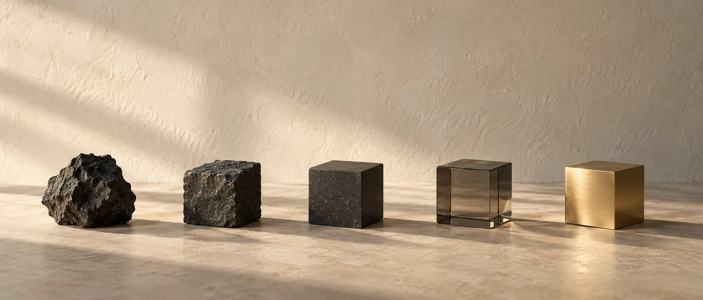

01
Conseil & Stratégie
Avant de construire quoi que ce soit, on définit à qui vous vendez et par quoi commencer.
- Audit et recommandations
- Positionnement et clarification de l’offre
- Feuille de route et priorités
Pour les petites entreprises et les boutiques en ligne
Je suis Abou, consultant et développeur. J’aide les petites entreprises et les boutiques en ligne à transformer plus de visiteurs en clients : une offre claire, un site qu’on comprend tout de suite, et des automatisations qui relancent chaque prospect à votre place.
Ce que je fais
Avoir plus de clients dépend en général de quatre choses qui fonctionnent ensemble : une offre claire, un site qu’on comprend, une façon de relancer chaque prospect, et des outils qui prennent en charge le travail répétitif. Je m’occupe des quatre, pour que rien ne se perde entre elles.
Avant de construire quoi que ce soit, on définit à qui vous vendez et par quoi commencer.
Une façon de collecter les prospects et de les trier, pour appeler d’abord les plus sérieux au lieu de suivre la liste dans l’ordre.
Des sites et des outils faciles à maintenir, et des automatisations pour le travail répétitif qui vous prend des heures chaque semaine.
Des écrans qu’on comprend du premier coup, sur téléphone comme sur ordinateur.
Pourquoi les quatre ?
Parce qu’elles dépendent les unes des autres. La stratégie décide de ce que le système de vente doit capter, le développement le fait fonctionner, et le design pousse les gens à l’utiliser. Quand une seule personne s’occupe de tout, moins de choses se perdent en route.
Parler d’un projetProjets
Une boutique en ligne, une automatisation de scoring de prospects, un tableau de bord e-commerce et une application d’orientation. Chaque page explique le problème de départ et où en est le projet aujourd’hui. Les études de cas sont en anglais.
Boutique en ligne d’une maison de chaussures et de maroquinerie à Cotonou
J’ai tout réalisé : la marque, les textes, un configurateur de chaussures sur mesure, une commande où le client paie à la livraison, et un écran d’administration pour l’atelier.
Moteur de scoring de prospects · prototype validé
Les réponses d’un formulaire sont notées et classées automatiquement en chaud, tiède et froid, puis inscrites dans une Google Sheet. Dans l’étude de cas, j’explique l’erreur que j’ai faite dans mon propre scoring, et comment je l’ai repérée.
Données publiques d’e-commerce brésilien · tableau de bord interactif
Ventes, régions, catégories, délais de livraison et avis clients réunis dans un tableau de bord, pour voir où une boutique en ligne perd de l’argent.
Plateforme d’orientation pour étudiants
Aide les étudiants à choisir entre cinq filières d’ingénieur (Full-stack, Cybersécurité, Big Data, IA et Robotique) grâce à un questionnaire en six étapes et un moteur de scoring pondéré.
À propos
J’aime travailler des deux côtés : comprendre le client, et construire l’outil.
Je suis Abou Camara. Je travaille en indépendant depuis Fès, au Maroc, avec des fondateurs et de petites équipes en Europe et en Afrique de l’Ouest. Si on travaille ensemble, vous traitez directement avec moi, du premier appel à la livraison.
J’ai étudié l’ingénierie Big Data, donc je peux construire ce que je recommande. Avec le temps, j’ai remarqué que le code était rarement ce qui bloquait un projet. Le plus souvent, ceux qui comprenaient les clients et ceux qui construisaient les outils ne se parlaient tout simplement pas.
C’est donc comme ça que je travaille. J’écris le positionnement, je conçois le tunnel de vente, je code l’automatisation qui le fait tourner, et je documente le tout pour que vous puissiez vous en servir sans moi.
Ce que je veux construire, ce sont des systèmes qu’une petite entreprise peut faire tourner au quotidien, qui ne promettent pas plus qu’ils ne font, et qui font gagner du temps.
Ma méthode
Écrire du code n’est qu’une étape sur cinq. Je commence par m’assurer de bien comprendre le problème, et je reste là après le lancement.

Un appel de 30 minutes où je pose surtout des questions. Vous repartez avec deux ou trois pistes concrètes, qu’on travaille ensemble ou non.
Sous 48 heures, vous recevez une proposition écrite : périmètre, approche, délais, livrables et prix fixe.
Je travaille par courtes itérations et je vous envoie un point chaque semaine. Vous pouvez consulter le travail en cours quand vous voulez.
J’automatise les tâches répétitives et je connecte le tout aux outils que vous utilisez déjà, pour que personne n’ait à trier à la main.
Lancement, transmission de tous les accès et de la documentation, et 30 jours de support. Ensuite, on améliore selon l’usage réel.
FormationProgrammation, analyse de données, architecture logicielle et leadership, avec les certificats originaux.
Voir les certifications (EN)Travailler ensemble
Je n’affiche pas de prix sur le site, parce que je ne peux pas vous donner un chiffre juste avant d’avoir compris le problème. Après le premier appel, vous recevez le périmètre et le coût par écrit, avant que le travail ne commence.
Vous avez besoin d’une chose précise : un site, un outil, une automatisation.
Vous préférez travailler dans la durée avec quelqu’un qui connaît déjà votre activité.